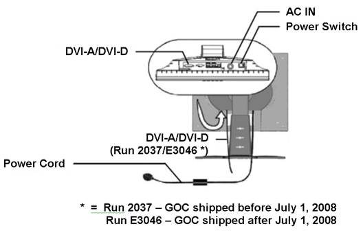
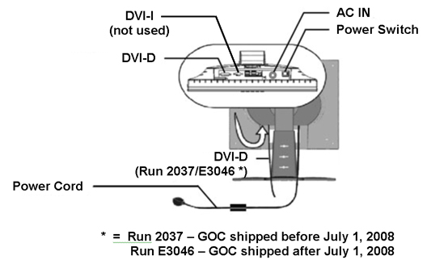
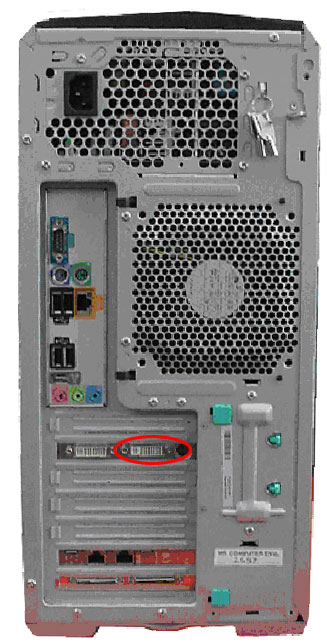
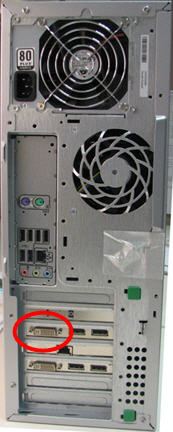
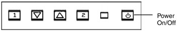
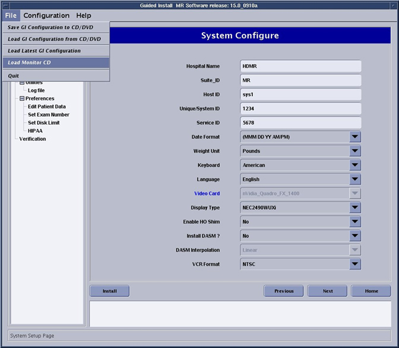

Operating Documentation
Direction 5670006, Rev# 1
Discovery MR750w GEM Service Methods
Module Version 9.0, Version Date 8/4/10
Operating Documentation |
| Required Persons | Preliminary Reqs | Procedure | Finalization |
|---|---|---|---|
| 1 | 0 min | 45 mins | 0 min |
This procedure describes how to install the workspace LCD color monitor used with the MR system.
Remove the new LCD monitor from its box and its packing and set the LCD color monitor on the operator workspace table.
| NOTE: | Only use the DVI-D and AC power cables. The other items are not used. Dispose of unused items locally. |
Connect the video and power cables. See Illustration 1, Illustration 2, Illustration 3 and Illustration 4. Route these cables neatly to the back of the monitor base and the operator's workspace.
Illustration 1: Video and Power Cable Connections - View Sonic Monitor

Illustration 2: Video and Power Cable Connections - NEC Monitor

Illustration 3: DVI-D Port on HP 8200, 8400 and 9300 GOC (Run 2037/E3046)

Illustration 4: DVI-D Port on Z400 GOC

| NOTE: | Insure that only GEHC product video hardware is connected to the GOC so that the software properly installs. |
Remove the safety lockout of the operator's workspace and restore power to the system.
Turn on the monitor by pressing the power switch on the back of the monitor (see Illustration 1 or Illustration 2). Check that the main LCD monitor power is on. If not, press the Power On/Off button on the front panel (see below).
Illustration 5: Front Power Button

Position the monitor no closer than 16 inches and no further then 28 inches from the eyes. The optimal distance is 24 inches for either of the monitors.
| NOTE: | Allow the monitor to warm up for 20 minutes before performing any adjustments. |
Boot up the GOC and enter sdc for the login.
Enter password adm2.0 and press <Enter>.
Open Guided Install and click System Configure under Basic Configuration
Refer to Illustration 6 to make sure of the following:
Make sure the correct Video Card is selected. If not, choose the correct video card model from the Video Card pull-down menu. If the Video Card is not listed make sure the most recent [MrpApps software and Service Packs] is loaded and any MR Monitor CD that may have come with the Host PC.
| NOTE: | To determine the Video Card model (if not auto-populated), open a command window and login as root. Type the command lspci | grep VGA. |
Make sure the correct Display Type is selected. If not, choose the correct monitor model from the Display Type pull-down menu. If your monitor is not listed make sure you have loaded the most recent [MrpApps software and Service Packs] and any MR Monitor CD which may have come with the monitor.
| NOTE: | To load Monitor CD, insert the Monitor CD and select [Load Monitor CD] from the Guided Install File menu. See below. |
Illustration 6: System Configuration Panel - Example

Click [Configure].
Adjust the screen of the monitor to suit the preference of the customer. For details and recommended settings, see LCD Monitor Screen Adjustments.
No finalization steps.